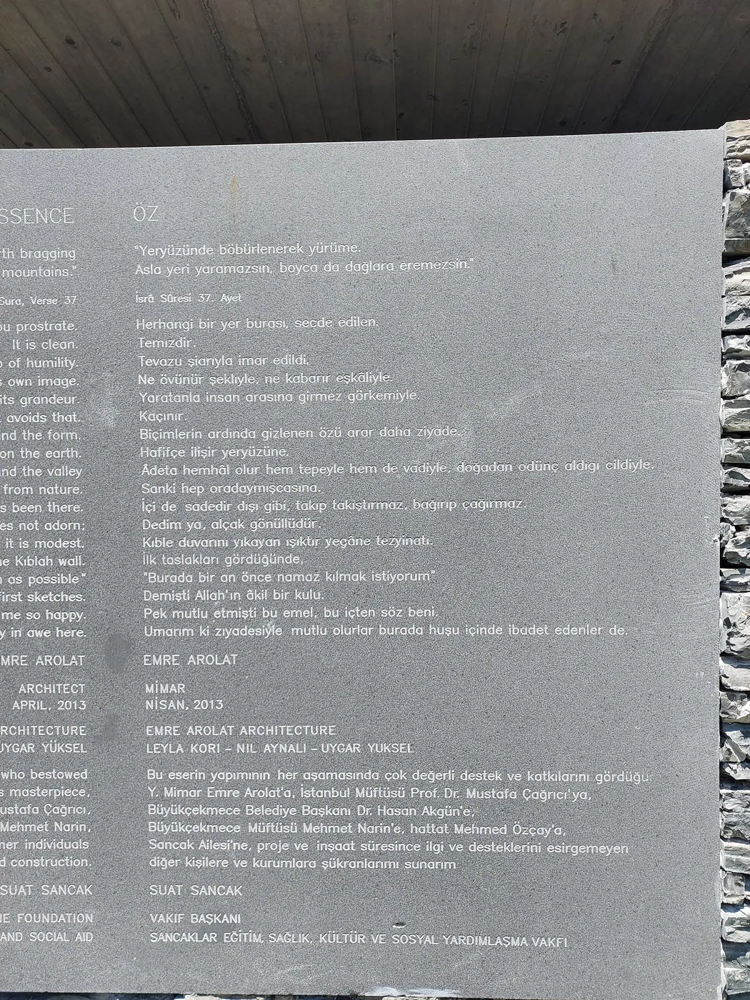
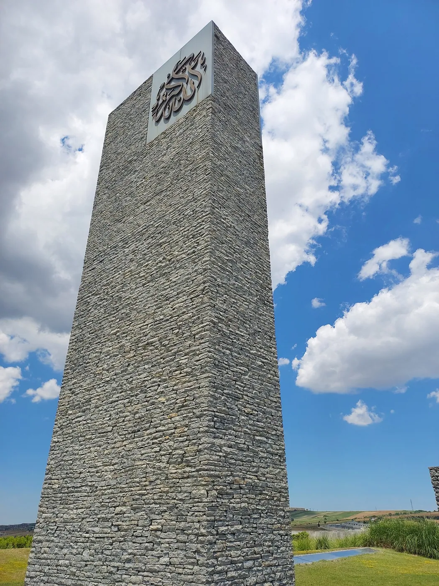

1/4 · ExteriorPhoto: Miraydwerri · CC BY-SA 4.0 · source2/4 · Exterior · Sancaklar Mosque and its minaretPhoto: Bjelica · CC BY-SA 4.0 · source
3/4 · Detail · Minaret of Sancaklar MosquePhoto: Bjelica · CC BY-SA 4.0 · source4/4 · Detail · Minaret of the Sancaklar MosquePhoto: Bjelica · CC BY-SA 4.0 · sourceReligious · Contemporary
Sancaklar Mosque
Emre Arolat · Istanbul, Türkiye · 2012
Key featuresA mosque dug into a hillside, its prayer hall lit by slits in the stepped roof.
- Architect
- Emre Arolat
- Place
- Istanbul, Türkiye
- Year
- 2012
- Typology
- Religious
- Movement
- Contemporary
- Region
- Middle East
See it on the wall